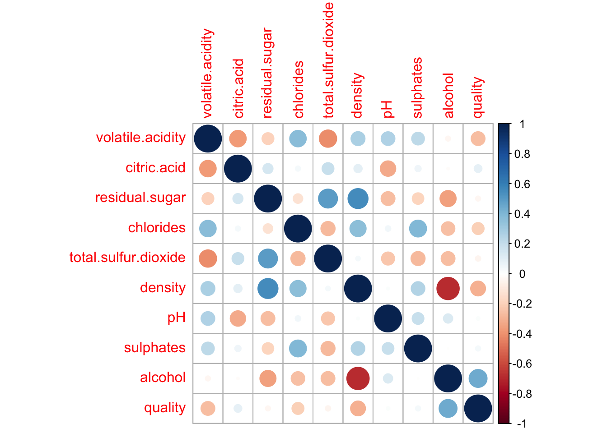
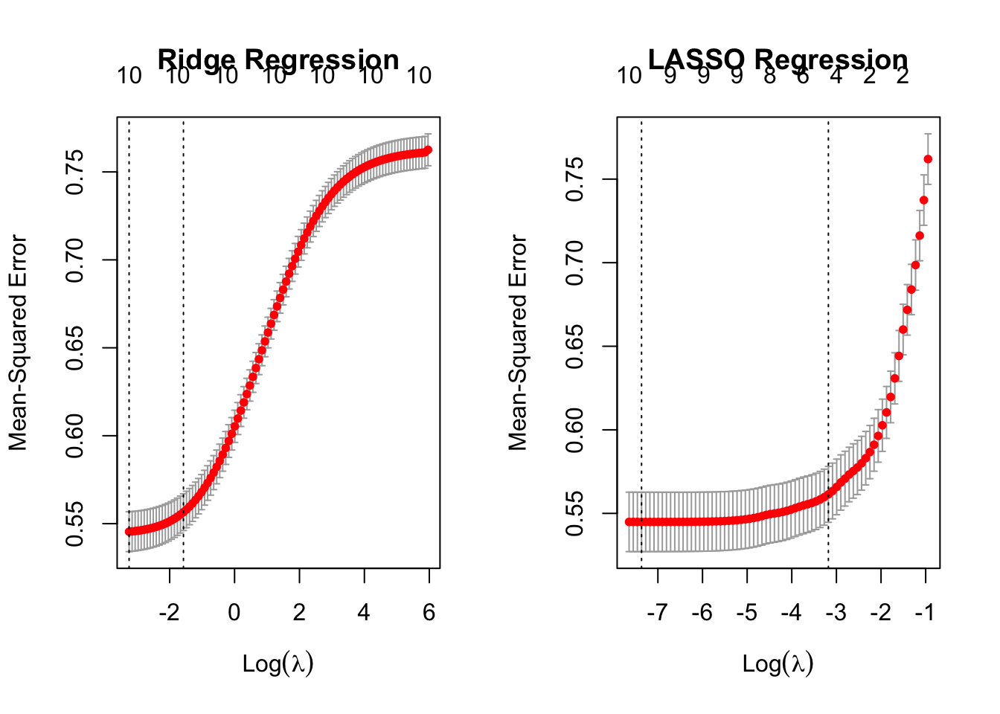

Please read the instructions carefully before submitting your assignment.
This assignment requires you to only upload a PDF file on Canvas
Don’t collapse any code cells before submitting.
Remember to make sure all your code output is rendered properly before uploading your submission.
⚠️ Please add your name to the author information in the frontmatter before submitting your assignment ⚠️
For this assignment, we will be using the Wine Quality dataset from the UCI Machine Learning Repository. The dataset consists of red and white vinho verde wine samples, from the north of Portugal. The goal is to model wine quality based on physicochemical tests
We will be using the following libraries:
library(readr)library(tidyr)library(dplyr)
Attaching package: 'dplyr'
The following objects are masked from 'package:stats':
filter, lag
The following objects are masked from 'package:base':
intersect, setdiff, setequal, union
library(purrr)library(car)
Loading required package: carData
Attaching package: 'car'
The following object is masked from 'package:purrr':
some
The following object is masked from 'package:dplyr':
recode
library(glmnet)
Loading required package: Matrix
Attaching package: 'Matrix'
The following objects are masked from 'package:tidyr':
expand, pack, unpack
Loaded glmnet 4.1-8
library(broom)library(corrplot)
corrplot 0.92 loaded
Question 1
50 points
Regression with categorical covariate and \(t\)-Test
1.1 (5 points)
Read the wine quality datasets from the specified URLs and store them in data frames df1 and df2. ::: {.cell}
Perform the following tasks to prepare the data frame df for analysis:
Combine the two data frames into a single data frame df, adding a new column called type to indicate whether each row corresponds to white or red wine.
Rename the columns of df to replace spaces with underscores
Remove the columns fixed_acidity and free_sulfur_dioxide
Convert the type column to a factor
Remove rows (if any) with missing values.
# 1. Combine the two data frames into a single data frame `df`, adding a new column called `type` to indicate whether each row corresponds to white or red wine.df1$type <-'white'df2$type <-'red'df <-rbind(df1, df2)# 2. Rename the columns of `df` to replace spaces with underscoresnames(df) <-gsub(" ", "_", names(df))# 3. Remove the columns 'fixed_acidity' and 'free_sulfur_dioxide'df <-select(df, -c(fixed.acidity, free.sulfur.dioxide))# 4. Convert the 'type' column to a factordf$type <-as.factor(df$type)# 5. Remove rows (if any) with missing values.df <-drop_na(df)dim(df)
[1] 6497 11
Your output to R dim(df) should be
[1] 6497 11
1.3 (20 points)
Recall from STAT 200, the method to compute the \(t\) statistic for the the difference in means (with the equal variance assumption)
Using df compute the mean of quality for red and white wine separately, and then store the difference in means as a variable called diff_mean.
Compute the pooled sample variance and store the value as a variable called sp_squared.
Using sp_squared and diff_mean, compute the \(t\) Statistic, and store its value in a variable called t1.
# Using `df` compute the mean of `quality` for red and white wine separately, and then store the difference in means as a variable called `diff_mean`mean_white <-mean(df[df$type =='white',]$quality)mean_red <-mean(df[df$type =='red',]$quality)diff_mean <- mean_white - mean_red# Compute the pooled sample variance and store the value as a variable called `sp_squared`.n_white <-nrow(df[df$type =='white',])n_red <-nrow(df[df$type =='red',])var_white <-var(df[df$type =='white',]$quality)var_red <-var(df[df$type =='red',]$quality)sp_squared <- ((n_white -1)*var_white + (n_red -1)*var_red) / (n_white + n_red -2)# Using `sp_squared` and `diff_mean`, compute the $t$ Statistic, and store its value in a variable called `t1`.t1 <- diff_mean /sqrt(sp_squared * (1/n_white +1/n_red))diff_mean
[1] 0.2418868
sp_squared
[1] 0.7518329
t1
[1] 9.68565
1.4 (10 points)
Equivalently, R has a function called t.test() which enables you to perform a two-sample \(t\)-Test without having to compute the pooled variance and difference in means.
Perform a two-sample t-test to compare the quality of white and red wines using the t.test() function with the setting var.equal=TRUE. Store the t-statistic in t2.
Fit a linear regression model to predict quality from type using the lm() function, and extract the \(t\)-statistic for the type coefficient from the model summary. Store this \(t\)-statistic in t3.
fit <-lm(quality ~ type, data = df)summary_fit <-summary(fit) # Get the summary of the fitted modelt3 <- summary_fit$coefficients["typewhite", "t value"]summary_fit
Call:
lm(formula = quality ~ type, data = df)
Residuals:
Min 1Q Median 3Q Max
-2.8779 -0.8779 0.1221 0.3640 3.1221
Coefficients:
Estimate Std. Error t value Pr(>|t|)
(Intercept) 5.63602 0.02168 259.918 <2e-16 ***
typewhite 0.24189 0.02497 9.686 <2e-16 ***
---
Signif. codes: 0 '***' 0.001 '**' 0.01 '*' 0.05 '.' 0.1 ' ' 1
Residual standard error: 0.8671 on 6495 degrees of freedom
Multiple R-squared: 0.01424, Adjusted R-squared: 0.01409
F-statistic: 93.81 on 1 and 6495 DF, p-value: < 2.2e-16
t3
[1] 9.68565
1.6 (5 points)
Print a vector containing the values of t1, t2, and t3. What can you conclude from this? Why?
c(t1, t2, t3)
t
9.68565 -9.68565 9.68565
The same size of the t values from different tests shows there’s a real difference in quality between red and white wines. The direction of the difference flips in one test because of how we compared the wines. This tells that the way we set up our tests matters, but no matter how we do it, we see that red and white wines are different in quality.
Question 2
25 points
Collinearity
2.1 (5 points)
Fit a linear regression model with all predictors against the response variable quality. Use the broom::tidy() function to print a summary of the fitted model. What can we conclude from the model summary?
model <-lm(quality ~ ., data = df)tidy_summary <-tidy(model)tidy_summary
Fit two simple linear regression models using lm(): one with only citric_acid as the predictor, and another with only total_sulfur_dioxide as the predictor. In both models, use quality as the response variable. How does your model summary compare to the summary from the previous question?
model_citric <-lm(quality ~ citric.acid, data = df)summary(model_citric)
Call:
lm(formula = quality ~ citric.acid, data = df)
Residuals:
Min 1Q Median 3Q Max
-2.9938 -0.7831 0.1552 0.2426 3.1963
Coefficients:
Estimate Std. Error t value Pr(>|t|)
(Intercept) 5.65461 0.02602 217.343 <2e-16 ***
citric.acid 0.51398 0.07429 6.918 5e-12 ***
---
Signif. codes: 0 '***' 0.001 '**' 0.01 '*' 0.05 '.' 0.1 ' ' 1
Residual standard error: 0.8701 on 6495 degrees of freedom
Multiple R-squared: 0.007316, Adjusted R-squared: 0.007163
F-statistic: 47.87 on 1 and 6495 DF, p-value: 5.002e-12
model_sulfur <-lm(quality ~ total.sulfur.dioxide, data = df)summary(model_sulfur)
Call:
lm(formula = quality ~ total.sulfur.dioxide, data = df)
Residuals:
Min 1Q Median 3Q Max
-2.8866 -0.7971 0.1658 0.2227 3.1965
Coefficients:
Estimate Std. Error t value Pr(>|t|)
(Intercept) 5.8923848 0.0246717 238.831 < 2e-16 ***
total.sulfur.dioxide -0.0006394 0.0001915 -3.338 0.000848 ***
---
Signif. codes: 0 '***' 0.001 '**' 0.01 '*' 0.05 '.' 0.1 ' ' 1
Residual standard error: 0.8726 on 6495 degrees of freedom
Multiple R-squared: 0.001713, Adjusted R-squared: 0.001559
F-statistic: 11.14 on 1 and 6495 DF, p-value: 0.000848
The model with type as a predictor shows a significant difference in wine quality between red and white wines, with a notable t value of 9.686, highlighting a clear impact of wine type on quality. However, the simple models reveal that while individual components like citric_acid positively affect wine quality and total_sulfur_dioxide negatively impacts it.
2.3 (5 points)
Visualize the correlation matrix of all numeric columns in df using corrplot()
cor_matrix <- df %>%select_if(is.numeric) %>%cor()# Visualize the correlation matrixcorrplot(cor_matrix)

2.4 (5 points)
Compute the variance inflation factor (VIF) for each predictor in the full model using vif() function. What can we conclude from this?
full_model <-lm(quality ~ ., data = df)vif_values <-vif(full_model)vif_values
volatile.acidity citric.acid residual.sugar
2.103853 1.549248 4.680035
chlorides total.sulfur.dioxide density
1.625065 2.628534 9.339357
pH sulphates alcohol
1.352005 1.522809 3.419849
type
6.694679
The VIF numbers show that most things we measured don’t have a big problem with overlapping information, except for “density” and “type” which are a bit high. This means “density” and “type” might be too similar to other things we measured, which can make the results less reliable for those two.
Question 3
40 points
Variable selection
3.1 (5 points)
Run a backward stepwise regression using a full_model object as the starting model. Store the final formula in an object called backward_formula using the built-in formula() function in R
library(stats)backward_model <-step(full_model, direction ="backward")
quality ~ volatile.acidity + residual.sugar + chlorides + density +
pH + sulphates + alcohol + type
3.2 (5 points)
Run a forward stepwise regression using a null_model object as the starting model. Store the final formula in an object called forward_formula using the built-in formula() function in R
null_model <-lm(quality ~1, data = df)forward_model <-step(null_model, direction ="forward", scope =list(lower =formula(null_model), upper =formula(full_model)))
quality ~ alcohol + volatile.acidity + sulphates + residual.sugar +
type + density + chlorides + pH
3.3 (10 points)
Create a y vector that contains the response variable (quality) from the df dataframe.
Create a design matrix X for the full_model object using the make_model_matrix() function provided in the Appendix.
Then, use the cv.glmnet() function to perform LASSO and Ridge regression with X and y.
library(glmnet)y <- df$qualityX <-model.matrix(quality ~ ., data = df)[,-1] lasso <-cv.glmnet(X, y, alpha =1)ridge <-cv.glmnet(X, y, alpha =0)
Create side-by-side plots of the ridge and LASSO regression results. Interpret your main findings.
par(mfrow =c(1, 2))# Plot for Ridge Regressionplot(ridge, x_vars="lambda", main ="Ridge Regression")
Warning in plot.window(...): "x_vars" is not a graphical parameter
Warning in plot.xy(xy, type, ...): "x_vars" is not a graphical parameter
Warning in axis(side = side, at = at, labels = labels, ...): "x_vars" is not a
graphical parameter
Warning in axis(side = side, at = at, labels = labels, ...): "x_vars" is not a
graphical parameter
Warning in box(...): "x_vars" is not a graphical parameter
Warning in title(...): "x_vars" is not a graphical parameter
# Plot for LASSO Regressionplot(lasso, x_vars="lambda", main ="LASSO Regression")
Warning in plot.window(...): "x_vars" is not a graphical parameter
Warning in plot.xy(xy, type, ...): "x_vars" is not a graphical parameter
Warning in axis(side = side, at = at, labels = labels, ...): "x_vars" is not a
graphical parameter
Warning in axis(side = side, at = at, labels = labels, ...): "x_vars" is not a
graphical parameter
Warning in box(...): "x_vars" is not a graphical parameter
Warning in title(...): "x_vars" is not a graphical parameter

For Ridge regression, the MSE is relatively stable across a range of λ, while LASSO shows a clear minimum MSE at an optimal λ, indicating a specific point where the regularization effectively balances bias and variance. The optimal λ for LASSO is where the coefficients are sufficiently penalized to reduce overfitting without losing important predictive information.
3.4 (5 points)
Print the coefficient values for LASSO regression at the lambda.1se value? What are the variables selected by LASSO?
lasso_coef <-coef(lasso, s ="lambda.1se")lasso_coef
11 x 1 sparse Matrix of class "dgCMatrix"
s1
(Intercept) 2.970652441
volatile.acidity -1.102676053
citric.acid .
residual.sugar 0.004759924
chlorides .
total.sulfur.dioxide .
density .
pH .
sulphates 0.257333706
alcohol 0.291622407
typewhite .
Store the variable names with non-zero coefficients in lasso_vars, and create a formula object called lasso_formula using the make_formula() function provided in the Appendix.
make_formula <-function(x){as.formula(paste("quality ~ ", paste(x, collapse =" + ")) )}# Create the formula objectlasso_formula <-make_formula(selected_variables)
3.5 (5 points)
Print the coefficient values for ridge regression at the lambda.1se value? What are the variables selected here?
Store the variable names with non-zero coefficients in ridge_vars, and create a formula object called ridge_formula using the make_formula() function provided in the Appendix.
ridge_coef <-coef(ridge, s ="lambda.1se")ridge_coef
11 x 1 sparse Matrix of class "dgCMatrix"
s1
(Intercept) 3.144277e+01
volatile.acidity -1.059706e+00
citric.acid 1.379376e-01
residual.sugar 2.060314e-02
chlorides -1.327890e+00
total.sulfur.dioxide -7.107514e-04
density -2.851987e+01
pH 1.534619e-01
sulphates 5.477788e-01
alcohol 2.262121e-01
typewhite -7.105307e-02
What is the difference between stepwise selection, LASSO and ridge based on you analyses above?
LASSO emphasizes variable selection by penalizing the absolute size of coefficients, leading some to become zero, thereby selecting a subset of variables. Conversely, ridge regression reduces coefficients overall by penalizing their squared size, usually retaining all variables with downweighted coefficients.
Question 4
70 points
Variable selection
4.1 (5 points)
Excluding quality from df we have \(10\) possible predictors as the covariates. How many different models can we create using any subset of these \(10\) coavriates as possible predictors? Justify your answer.
The number of different models that can be created using any subset of the 10 covariates as predictors can be calculated using the formula for the total number of subsets of a set. Since each covariate can either be included or excluded from the model, there are 2 choices for each covariate. Therefore, the total number of different models is 2^10, which equals 1024
4.2 (20 points)
Store the names of the predictor variables (all columns except quality) in an object called x_vars.
x_vars <-colnames(df %>%select(-quality))
Use:
the combn() function (built-in R function) and
the make_formula() (provided in the Appendix)
to generate all possible linear regression formulas using the variables in x_vars. This is most optimally achieved using the map() function from the purrr package.
formulas <-map(1:length(x_vars), \(x) { vars <-combn(x_vars, x)map(vars, ~make_formula(.x)) }) %>%unlist()
If your code is right the following command should return something along the lines of:
Use map() and lm() to fit a linear regression model to each formula in formulas, using df as the data source. Use broom::glance() to extract the model summary statistics, and bind them together into a single tibble of summaries using the bind_rows() function from dplyr.
Are aic_formula and rsq_formula the same? How do they differ from the formulas shortlisted in question 3?
aic_formula and rsq_formula are the same, both simplifying to quality ~ alcohol, indicating a model selection process focused on explanatory power led to a similar conclusion. They differ from the formulas in question 3 by potentially reflecting different criteria for inclusion and resulting in a more simplified model.
Which of these is more reliable? Why?
models derived from cross-validation methods like lasso is more reliable due to their consideration of overfitting
If we had a dataset with \(10,000\) columns, which of these methods would you consider for your analyses? Why?
For a dataset with 10,000 columns, lasso regression would be preferable because it can handle high-dimensional data by performing variable selection and regularization simultaneously.
4.7 (10 points)
Use map() and glance() to extract the sigma, adj.r.squared, AIC, df, and p.value statistics for each model obtained from final_formulas. Bind them together into a single data frame summary_table. Summarize your main findings. ::: {.cell}
summary_table <-map_df(final_formulas, ~{tryCatch({ model <-lm(.x, data = df) broom::glance(model) }, error =function(e) {# Return NA or a placeholder dataframe if the model cannot be fittedreturn(tibble(adj.r.squared =NA, sigma =NA, p.value =NA, df =NA,AIC =NA )) })})knitr::kable(summary_table)
r.squared
adj.r.squared
sigma
statistic
p.value
df
logLik
AIC
BIC
deviance
df.residual
nobs
0.0000000
0.0000000
0.8732553
NA
NA
NA
-8337.822
16679.64
16693.20
4953.686
6496
6497
0.2887119
0.2876152
0.7370527
263.2668
0
10
-7231.131
14486.26
14567.61
3523.498
6486
6497
0.2885336
0.2876563
0.7370314
328.8992
0
8
-7231.945
14483.89
14551.68
3524.381
6488
6497
0.2885336
0.2876563
0.7370314
328.8992
0
8
-7231.945
14483.89
14551.68
3524.381
6488
6497
NA
NA
NA
NA
NA
NA
NA
NA
NA
NA
NA
NA
NA
NA
NA
NA
NA
NA
NA
NA
NA
NA
NA
NA
0.1974189
0.1972954
0.7823824
1597.6406
0
1
-7623.404
15252.81
15273.15
3975.734
6495
6497
0.1974189
0.1972954
0.7823824
1597.6406
0
1
-7623.404
15252.81
15273.15
3975.734
6495
6497
:::
Appendix
Convenience function for creating a formula object
The following function which takes as input a vector of column names x and outputs a formula object with quality as the response variable and the columns of x as the covariates.
make_formula <-function(x){as.formula(paste("quality ~ ", paste(x, collapse =" + ")) )}# For example the following code will# result in a formula object# "quality ~ a + b + c"make_formula(c("a", "b", "c"))
Convenience function for glmnet
The make_model_matrix function below takes a formula as input and outputs a rescaled model matrix X in a format amenable for glmnet()